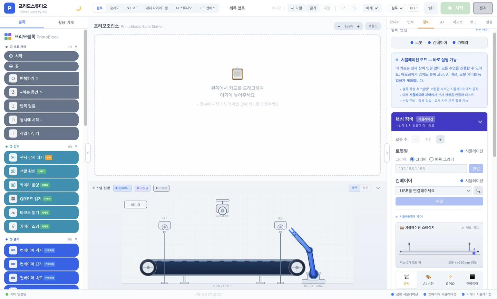

하드웨어 연결 (Lite 6 키트)¶
키트를 받으셨다면 이 순서대로 PC 와 연결합니다. 컨베이어·컨베이어·센서·모터는 이미 조립되어 제공되므로 사용자가 직접 결선할 필요는 없습니다.
키트 구성¶
| 항목 | 사용자가 하는 일 |
|---|---|
| 컨베이어 박스 (컨베이어 + 센서 일체) | USB 케이블로 PC 연결 + 전용 어댑터를 콘센트에 |
| 카메라 | USB 케이블로 PC 직결 또는 Wi-Fi 연결 |
| Lite 6 로봇팔 | LAN 케이블로 PC 연결 + 전용 어댑터를 콘센트에 |
연결 순서¶

안전 수칙¶
- Lite 6 가동 영역 안에 사람·물체 없음 확인 후 전원 인가
- E-STOP 버튼 위치 숙지
- 첫 동작은 반드시 저속으로 확인
- 컨베이어와 Lite 6 는 별도 콘센트 사용 (Lite 6 가 순간적으로 큰 전류 사용)
다음 단계¶
준비되셨다면 컨베이어 연결 → 로 이동합니다.
이 페이지에 빠진 내용이나 잘못된 부분을 발견하시면 페이지 하단 📮 피드백 보내기 를 활용해 주세요.